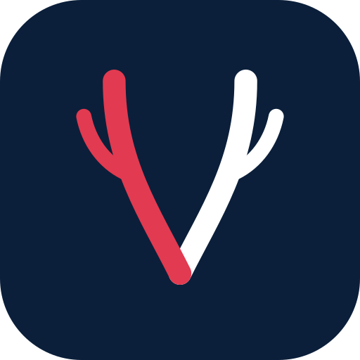
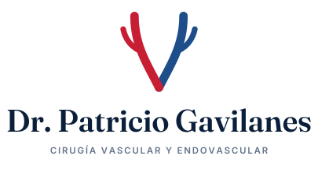
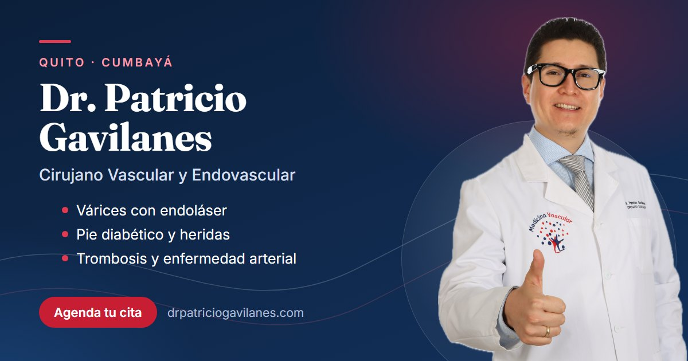

Propósito, promesa, valores y personalidad de la marca.
Isotipo, versiones, construcción, área de protección, tamaños mínimos, fondos y usos incorrectos.
Paleta principal y de apoyo, con valores HEX, RGB y CMYK.
Fraunces e Inter: jerarquía, tamaños y combinaciones.
Líneas vasculares, iconos, botones, etiquetas y fotografía.
Cómo habla la marca, ética publicitaria y ejemplos impresos y digitales.
Este manual es la referencia para todo lo que lleve el nombre del Dr. Patricio Gavilanes: sitio web, redes sociales, recetas, tarjetas, rótulos de consultorio, presentaciones y anuncios. Si una pieza contradice lo que dice aquí, lo que hay que corregir es la pieza.
Devolver a cada paciente la libertad de moverse sin dolor, cuidando su circulación con conocimiento especializado, tecnología mínimamente invasiva y un trato humano.
Un diagnóstico claro, explicado con paciencia, y el tratamiento menos invasivo que sea seguro para usted.
Experto sin ser distante · Cercano sin perder seriedad · Moderno sin ser frío · Honesto antes que vendedor.
Formación rigurosa y más de 15 años de experiencia en patología vascular compleja.
La seguridad del paciente guía cada decisión. Nunca se promete un resultado.
Escuchar, explicar y acompañar. El paciente entiende su diagnóstico.
Endoláser, cirugía endovascular y Eco Doppler para tratar con menos invasión.
El símbolo son dos vasos que se ramifican y se unen. A la izquierda, la arteria en rojo; a la derecha, la vena en azul: los dos sistemas que trata la especialidad, con los colores que usa la medicina para representarlos.
Juntos forman una V: de vascular, de vida y de vena. Las ramas laterales dibujan el árbol vascular y le dan al símbolo un movimiento ascendente, de crecimiento y recuperación.
Los extremos redondeados y el trazo continuo transmiten un tratamiento suave, mínimamente invasivo. En la unión, la arteria pasa por delante: la circulación vuelve a encontrarse.


Área de protección (x): el alto de la letra "D" de "Dr.". Ningún texto, borde ni imagen puede entrar en ese margen alrededor del logo.
| Versión | Pantalla | Impreso |
|---|---|---|
| Horizontal | 180 px de ancho | 40 mm |
| Vertical | 120 px de ancho | 28 mm |
| Isotipo / ícono | 24 px | 8 mm |
Se construye en una caja de 100 × 100. Troncos de 9 unidades de grosor, ramas de 6, extremos redondeados. La arteria (izquierda) siempre se dibuja por delante de la vena en el punto de unión.
Proporción recomendada: 60 % blanco/crema · 25 % azul noche · 10 % azul vena · 5 % rojo. El rojo es el acento: se usa en llamadas a la acción y detalles, nunca como fondo de una pieza completa de texto largo.
Serif con calidez y autoridad. Titulares, nombre del doctor y citas. Pesos: SemiBold 600 para títulos; Medium Italic 500 para frases destacadas.
Sans serif clara y muy legible en pantalla. Textos, botones, etiquetas y datos. Pesos: Regular 400, Medium 500, SemiBold 600, Bold 700.
Texto de lectura a 16–18 px con interlineado de 1,6. Las etiquetas van en mayúsculas espaciadas; los botones, en SemiBold.
| Nivel | Fuente | Web | Redes / impreso |
|---|---|---|---|
| Titular | Fraunces SemiBold | 40–64 px | Lo más grande de la pieza; máximo 2 líneas |
| Subtítulo | Fraunces SemiBold | 22–28 px | Títulos de sección, nombres de tratamiento |
| Texto | Inter Regular | 16–18 px | Mínimo 9 pt impreso |
Líneas vasculares: curvas finas en blanco y rojo, al 15–35 % de opacidad, en el borde inferior de los fondos azul noche. Evocan el flujo de la sangre. Nunca compiten con el texto.
Iconos de trazo lineal (2 px, extremos redondeados, estilo Lucide), en rojo o azul noche. Esquinas redondeadas: 12–18 px en tarjetas, píldora en botones y etiquetas.
Frases cortas. Se explica el término médico la primera vez: "insuficiencia venosa (las venas no devuelven bien la sangre)".
Se trata de usted. Empatía con el miedo y el dolor del paciente, sin dramatizar.
Se informa y se invita a consultar; no se diagnostica por redes ni se garantizan resultados.
Ética publicitaria: la publicidad de servicios de salud en Ecuador debe ser veraz y no inducir a error. No se usan superlativos no comprobables ("el mejor"), promesas de curación ni testimonios inventados. Toda cifra (años de experiencia, procedimientos) debe poder sustentarse.

| Canal | Formato |
|---|---|
| Sitio web | drpatriciogavilanes.com · favicon = ícono |
| Foto de perfil = ícono · mensaje de bienvenida con sedes | |
| Perfil de empresa por sede, logo = ícono |
drpatriciogavilanes.com · +593 99 834 0502 · info@drpatriciogavilanes.com
Archivos de logo (SVG y PNG) en branding/assets · Manual de identidad v1.0 · Octubre 2026